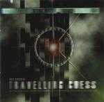

Home Artist links Label link

| Artist: | Parallel Or 90 Degrees |
| Title: | No More Travelling Chess |
| Label: | Cyclops CYCL 086 |
| Length(s): | 70 minutes |
| Year(s) of release: | 1999 |
| Month of review: | 01/2000 |
Line up
Andy Tillison Diskdrive - vocals, keyboards, guitars and drums
Guy Manning - guitars, keyboards, backing vocals
Tracks
| 1) | Arrow | 7.45
|
| 2) | Roncevaux | 6.50
|
| 3) | Flight | 19.24
|
| 4) | Modern | 10.02
|
| 5) | In The Black Room | 12.17
|
| 6) | Advance | 8.46
|
| 7) | Evolutionary Status Quo | 4.43
|
Summary
Parallel or 90 degrees were Gold Frankincense And Diskdrive with Tillison
and Manning. As such they recorded this album (without In The Black Room)
and it was released on cassette. Now Manning back with PO90 it was easy to
record an additional track (In The Black Room) and put it out on Cyclops.
The older tracks are unchanged.
The music
Arrow is a VDGG track from Godbluff. It certainly not one of the easiest
tracks of that album to get into. Usually that also makes it the most
rewarding. The saxophones seem to have taken over by the keyboards, but is
does not strike me as synthetic. Tillison does a good job showing the raw
emotion that is also present in the original. the song itself comes in waves:
soft to harsh and back and forth like that with the pinnacle being the
tormentedly shouted Arrow. For a VDGG track it is rather bouncy. The song
dribbles away rather quietly. And did I hear a small dip there? On Roncevaux
the band even had assistance from PH himself. I have to admit not being
familiar with this song (maybe it is on Time Vaults). The first part has
the energy and agression of VDGG and after a quieter interlude the pouncing
beginning returns. I have to say that the sound quality is less than
perfect here. It all sounds a bit muddy.
Flight is the Hammill solo epic from The Black Box. Almost 20 minutes long
it opens with clear piano playing (somewhat clavecimbel like) and a good
vocal melody. Across a pianic bridge we come into a more up-beat part. The
drums sound a bit mechanic here (something which I think also holds for part
of the percussion of the previous track. Then the music becomes quite
varied with long piano strings and quite a lot of rhythmic variation.
It shows also that the sound on this song for instance is quite close to what
later became PO90. The vocals of Tillison are rather like Hammill, but there
is something that sets it apart making me first think of PO90 here and only
later of Hammill. Between the 8 and 10 minutes the music becomes rather
melodramatic, after which the music tries to make a new beginning, but returns
again to the piano part after which the tempo picks up making for a good piece
of driven music. With some dissonants, the pace goes down a bit again yielding
the stage for a short guitarsolo and a place to rest. Soft echoey sounds
quickly give way to the vocal climax and all hell seems to break loose here
(soundwise). Then we get another break into a new part: great vocal melodies
again with a strong dramatic feel to it. Modern is one of the Hammill classics
about life in the city. An observant track. The opening is loud and distorted,
the continuation weird and freaky. Lots of experimentation here until the
rhythm guitar bring a bit of clarity (!) and the rock gets underway again.
Not for the faint of heart. The last Hammill/VDGG cover is In The Black Room.
This is an early Hammill track and this version is quite a bit longer than
the original it seems at first, but then it shows that it's not just that
single track, but also the two subsequent tracks: The Tower and In The Black
Room (II). Again a great track, but bringing nothing really new.
Advance is a Tillison track. It opens quite pompously with loud keyboards and
hammered piano, but also an almost danceable rhythm. The rhythm sounds a bit
artificial unfortunately. Quite a nice track this with a rather menacing
ending with some nice dissonants. Evolutionary Status Quo by Manning is more
an acoustic track. The music on this track reminds me a bit of Geoff Mann and
other heavy wood musicians such as Rog Patterson and of course Roy Harper.
I'm not so fond of this one.
The artwork looks a bit like the resolution was a bit too low. The text
is a bit hard to read.
Conclusion
The quality of the songs shows enough: if you still haven't tried out Hammills
or Van Der Graaf Generators music, try it (Godbluff and Black Box are good
places to start.). The versions played here by PO90 are thoroughly enjoyable
and they certainly live up to the music bringing over the energy and
agression that is such an important characteristic of VDGG/Hammill music. This
something that I often missed on the Mellow tribute. The production/sound is
not always great, but the music thoroughly compensates for this. Certainly
interesting for people who like either of the two bands.
© Jurriaan Hage